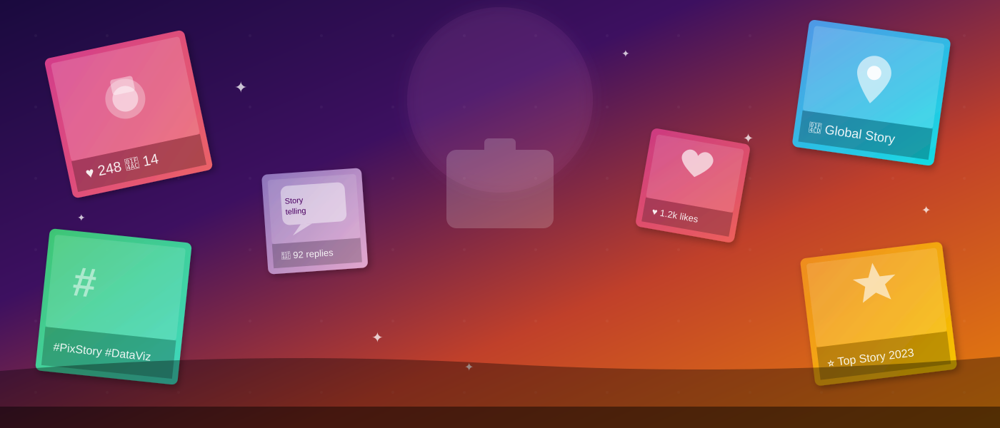

This site presents DSCI 550 Spring 2023 student work on the Pixstory social media dataset. Pixstory is a story-sharing platform focused on responsible social discourse, providing a rich dataset of multilingual posts, user demographics, topic interests, toxicity scores, and geotagged locations. Across three assignments, teams enriched the data and produced interactive D3 visualizations.
The first assignment asked students to augment the Pixstory dataset with derived features and at least three additional public datasets (news events, population data, language corpora). The second assignment added GeoTopicParser, SpaCy named entities, AI-generated captions, hate-speech and sarcasm scores, and image object-recognition features. The third assignment asked teams to create D3 mini-sites exploring MEMEX ImageSpace, ImageCat, GeoParser, and Apache Solr/ElasticSearch workflows.

Bess Djavadi, Ric Xian, Shreya Raj, Mahika Mushuni, and Tala Tayebi produced five D3 visualizations: Age & Toxicity by Gender (scatterplot), Posts by Main Event Topics by Gender (grouped bar), Proportional Frequency by Age & Interest (stacked bar), Male Identity Attack by Age (box plot), and Objects by Gender (word cloud).
Five D3 visualizations from the Pixstory dataset enriched with JPL GeoParser and ImageSpace: a Bar Chart Race of language counts over time, a Language Counts Bar Chart, a Word Cloud of post text, a Bubble Chart of topic clusters, and a US State Choropleth map of Pixstory user locations.
Jimin Ding, Mingyu Zong, Hui Qi, and Xiaoyu Dong built five D3 visualizations using the Pixstory dataset ingested into Apache Solr: a TimeSeries of post activity, a Heatmap of engagement, a Sunburst chart of topic hierarchy, an Index Chart of trending terms, and a Radial Stacked Bar of demographics.
Team 6 (DSCI550_SP23_team6) produced five interactive D3 visualizations: Post Interest Age Range distribution, Hazard Location Bubble chart, Language Location Map, Age-to-Posting-Time scatter, and an Entertainment Calendar heatmap — all derived from the Pixstory social media dataset.
Know of another DSCI 550 Pixstory visualization project? Contact the IRDS group to have it added.
The class used the Pixstory social media dataset — a collection of multilingual story posts with user age, gender, topic interest, toxicity scores, geographic coordinates, and engagement metadata from the Pixstory responsible-discourse platform. Students enriched the data using Apache Tika, GeoTopicParser, SpaCy, ImageSpace, and several external event and language datasets.
The Information Retrieval and Data Science Group's mission is to research and develop open source software to analyze, ingest, process, and manage Big Data and turn it into information.
Explore other USC DSCI 550 data visualization archives: UFO sightings, haunted places, Bigfoot sightings, and phishing email datasets — all built by USC students using the same IRDS data science pipeline.
Dr. Chris Mattmann — Visit his website
DSCI 550 Spring 2023 Class — Pixstory web data visualization assignment
Visualizations by: Group 4 (B. Djavadi, R. Xian, S. Raj, M. Mushuni, T. Tayebi); Todd Gavin; Team 3 (J. Ding, M. Zong, H. Qi, X. Dong); Team 6 (T. Wang et al.)